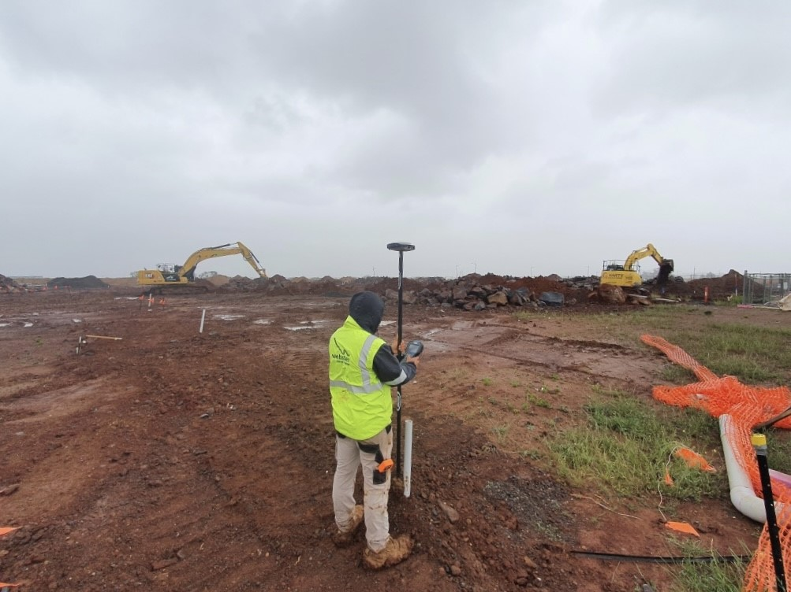
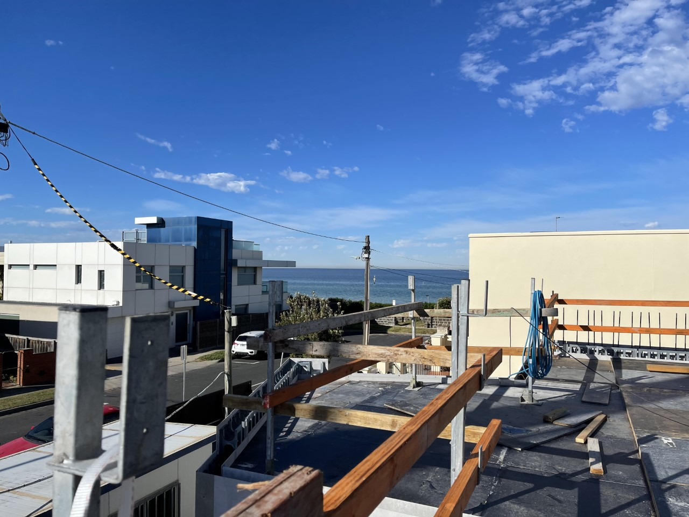
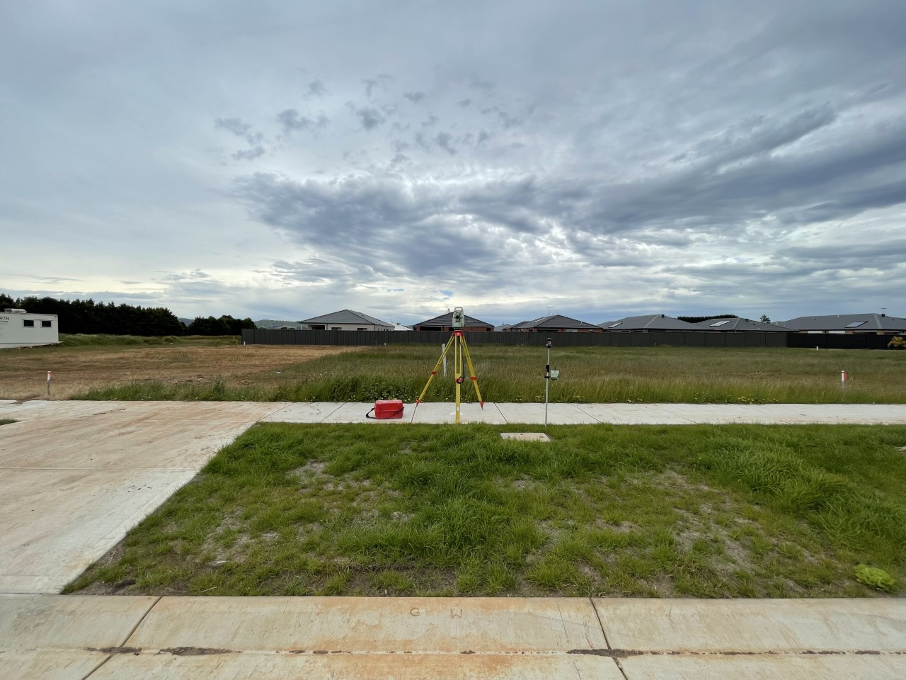
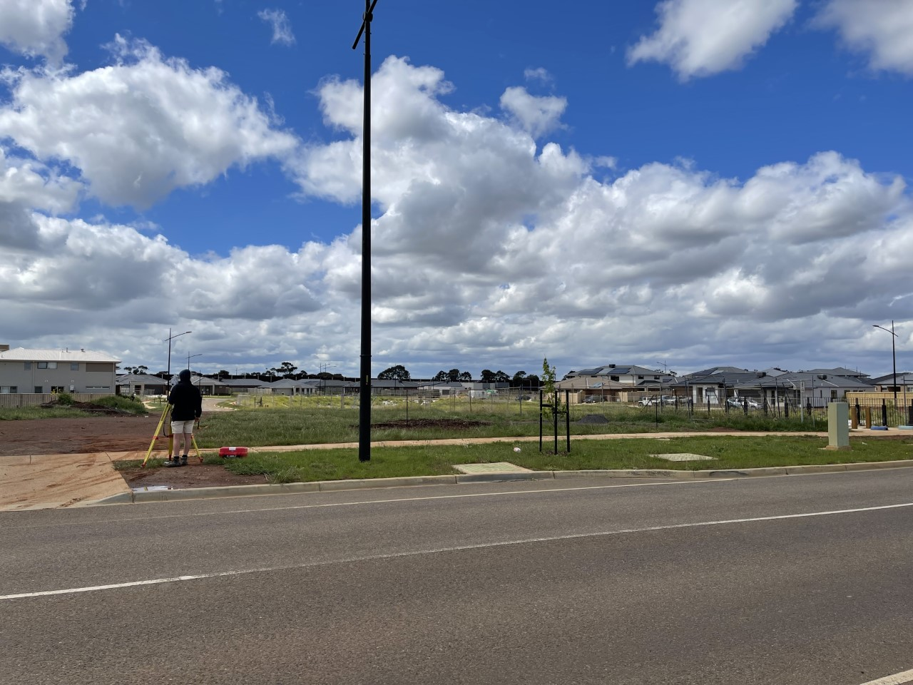
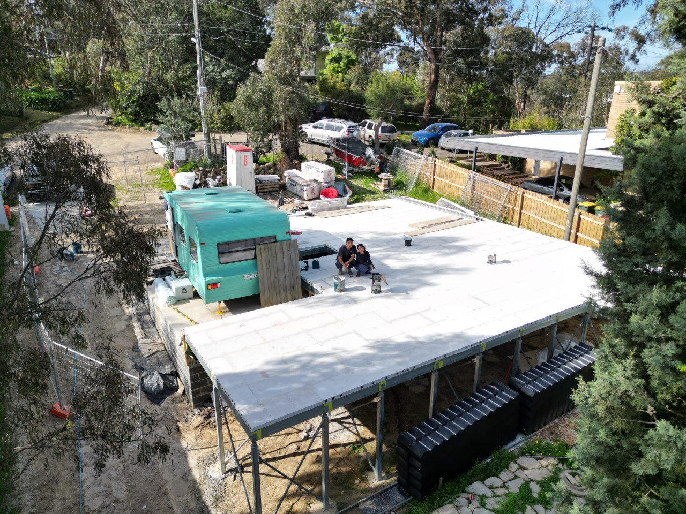

My experiences
My working career started when in 2018 with a cleaning business that my Mum gave me. I ran and operated that until 2022 when I passed it down to my sister.
I have been working as a surveyor since 2019 and have been at Webster Survey Group since January 2020.
I have had many experiences in both cadastral and construction surveying at Websters.
Listed below are some of the highlights of my career so far.

This was a massive 3 stage subdivision for a new estate called Majesty along Taylors Road, Plumpton. I did the majority of the asset recording for this job.

I was part of a large commercial construction setout for 18 apartments right next to the beach in Aspendale.
Our team at Websters were on-site from the first setout up until the official subdivision of apartments.

The new subdivisions along Pioneer Way in Gisborne required 15 lots to be pegged, flagged, and numbered.
This was my first time lot pegging, I have completed hundreds of other lot pegging at Websters since then.

This was a feature and level survey as well as a re-establishment survey. It was the first time that I was the lead surveyor with an assistant helping me. I have gained a lot more confidence in undertaking these as lead now.

This is possibly my favourite job of all. I have been able to apply everything that I have learnt and used it for my own purpose. This is my mums new house that she is building currently and I did the feature and level survey, marked boundaries, and completed the setout.

This is what the house looks like at its current stage.
Thank you for your time and interest in some of my experiences. If you are interested in hearing more about me, please don't hesitate to contact me with my details below.